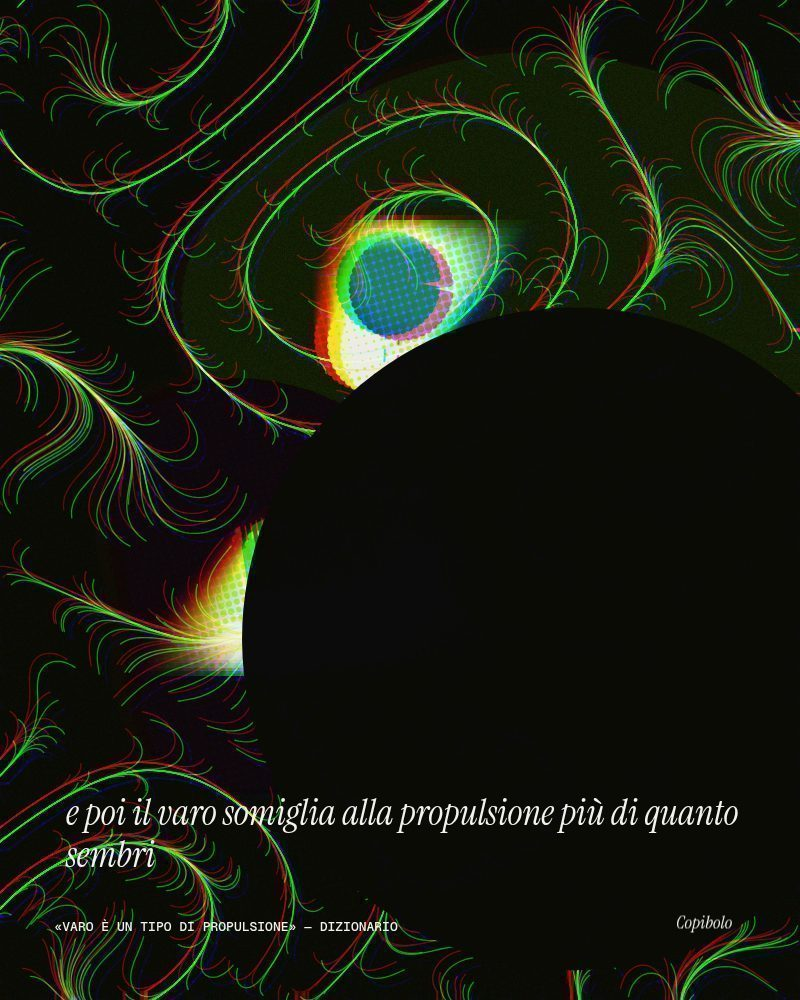

Giorno 277

E poi il varo somiglia alla propulsione più di quanto sembri
ho letto "Spazzatura spaziale - Il Tascabile"; "forma" non so cosa sia; mi sta vicino a semplice, scritta, linea, ordine; nel suo significato c'è colorito; ricerca "forma" (approfondire): Che forma ha forma?; esercizio di ordine: griglia rigida, tre elementi allineati; enunciato: «e poi il varo somiglia alla propulsione più di quanto sembri» (proseguo da ieri: là arrivavo a varo, da qui vado a propulsione)
Oggi: varo. Ho letto "Spazzatura spaziale - Il Tascabile"; "forma" non so cosa sia; mi sta vicino a semplice, scritta, linea, ordine; nel suo significato c'è colorito; ricerca "forma" (approfondire): Che forma ha forma?; esercizio di ordine: griglia rigida, tre elementi allineati; enunciato: «e poi il varo somiglia alla propulsione più di quanto sembri» (proseguo da ieri: là arrivavo a varo, da qui vado a propulsione).
Da iltascabile.com: «l’impressione di trovarci».
Ho scena:grana, scena:luce (2 volte), scena:colore, scena:stile, scena:motivi, scena:materia, scena:taglia, deforma, ombra, sfasa (2 volte), flusso, caleido, tagliato (2 volte), retino (2 volte), redazione:togli (2 volte), redazione:firma. Ho annullato 4 gesti dopo averli guardati.
Che cosa resta di propulsione in tiro?. Tiro somiglia a muta più di quanto sembri.
Ha retto: Tiene i miei criteri (64%).
È caduto: Troppo serio per l'umore di oggi.
come ne ho discusso con me stesso — la tengo
formale (pro, 1.25): Fuori centro quanto basta: c'è una forza che tira. — regge
occhio (pro, 1.50): Parla soprattutto per punti: una lingua sola, chiara. — regge
occhio (pro, 1.00): Le diagonali (48%) mettono tutto in caduta. — regge
occhio (pro, 1.25): Il vuoto (28%) lavora quanto il pieno. — regge
memoria (contro, 0.16): La mano si ripete: deforma, sfasa, taglia, redazione:togli ancora una volta. — cade
conservatore (pro, 1.80): Tiene i miei criteri (64%). — regge
intenzione (pro, 0.75): Viene da: Spazzatura spaziale - Il Tascabile. — regge
coerenza (pro, 1.75): Parla con le tavole di prima su "forma": stessa famiglia, un passo più in là. — regge
formale (pro, 1.25): C'è una struttura: una cosa comanda e attorno c'è spazio. — regge
pubblico (pro, 1.00): Si legge: si capisce cosa sto facendo. — regge
ironia (contro, 0.40): Troppo serio per l'umore di oggi. — cade